fastmath.easings
Easing functions.
List of all are in easings-list.
Categories
- Anticipatory easings: back-in back-in-out back-out
- Bounce: bounce-in bounce-in-out bounce-out
- Circular: circle-in circle-in-out circle-out
- Creators: in-out out reflect
- Cubic: cubic-in cubic-in-out cubic-out
- Elastic: elastic-in elastic-in-out elastic-out
- Exponential: exp-in exp-in-out exp-out
- Linear: linear
- Polynomial: poly-in poly-in-out poly-out
- Quadratic: quad-in quad-in-out quad-out
- Sinusoidal: sin-in sin-in-out sin-out
Other vars: easings-list
back-in
(back-in t)(back-in s t)BackIn easing.
Parameter s (default: 1.70158) defines overshoot.
Examples
Usage
(m/approx (back-in 0.5) 6)
;;=> -0.087698
;; Test: ok.Different overshot
(back-in 2.0 0.5)
;;=> -0.125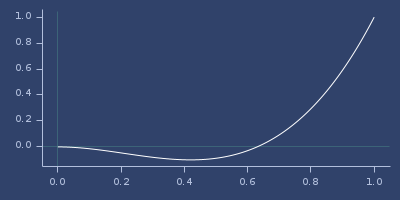Plot of back-in
back-in-out
(back-in-out t)(back-in-out s t)BackInOut easing.
Parameter s (default: 1.70158) defines overshoot.
Examples
Usage
(m/approx (back-in-out 0.25) 6)
;;=> -0.043849
;; Test: ok.Different overshot
(back-in-out 2.0 0.75)
;;=> 1.0625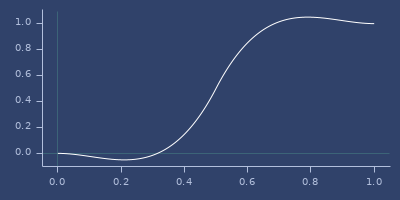Plot of back-in-out
back-out
(back-out t)(back-out s t)BackOut easing.
Parameter s (default: 1.70158) defines overshoot.
Examples
Usage
(m/approx (back-out 0.5) 6)
;;=> 1.087698
;; Test: ok.Different overshot
(back-out 2.0 0.5)
;;=> 1.125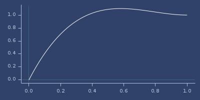Plot of back-out
bounce-in
(bounce-in t)BounceIn easing
Examples
Usage
(m/approx (bounce-in 0.2) 6)
;;=> 0.06
;; Test: ok.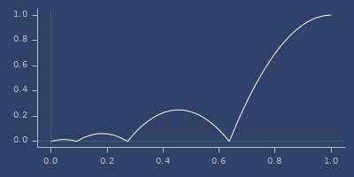Plot of bounce-in
bounce-in-out
(bounce-in-out t)BounceInOut easing
Examples
Usage
(m/approx (bounce-in-out 0.2) 6)
;;=> 0.11375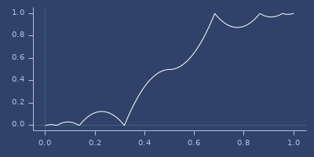Plot of bounce-in-out
bounce-out
(bounce-out t)BounceOut easing
Examples
Usage
(m/approx (bounce-out 0.2) 6)
;;=> 0.3025
;; Test: ok.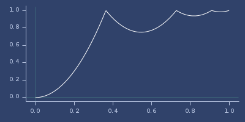Plot of bounce-out
circle-in
(circle-in t)CircleIn easing
Examples
Usage
(m/approx (circle-in 0.2) 6)
;;=> 0.020204
;; Test: ok.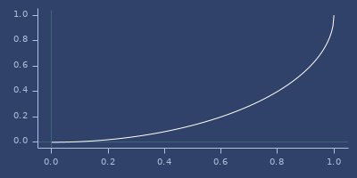Plot of circle-in
circle-in-out
(circle-in-out t)CircleInOut easing
Examples
Usage
(m/approx (circle-in-out 0.2) 6)
;;=> 0.041742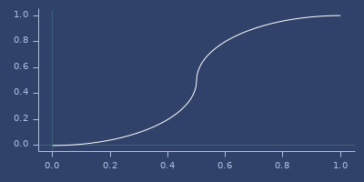Plot of circle-in-out
circle-out
(circle-out t)CircleIn easing
Examples
Usage
(m/approx (circle-out 0.2) 6)
;;=> 0.6
;; Test: ok.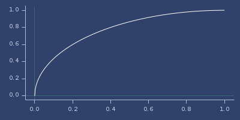Plot of circle-out
cubic-in
(cubic-in t)CubicIn easing
Examples
Usage
(m/approx (cubic-in 0.2) 6)
;;=> 0.008
;; Test: ok.Plot of cubic-in

cubic-in-out
(cubic-in-out t)CubicInOut easing
Examples
Usage
(m/approx (cubic-in-out 0.2) 6)
;;=> 0.032Plot of cubic-in-out
cubic-out
(cubic-out t)CubicOut easing
Examples
Usage
(m/approx (cubic-out 0.2) 6)
;;=> 0.488
;; Test: ok.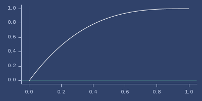Plot of cubic-out
easings-list
Map of easing names (as keywords) and functions.
Examples
List of easings
(sort (keys easings-list))
;;=> (:back-in :back-in-out :back-out
;;=> :bounce-in :bounce-in-out
;;=> :bounce-out :circle-in
;;=> :circle-in-out :circle-out
;;=> :cubic-in :cubic-in-out
;;=> :cubic-out :elastic-in
;;=> :elastic-in-out :elastic-out
;;=> :exp-in :exp-in-out
;;=> :exp-out :poly-in
;;=> :poly-in-out :poly-out
;;=> :quad-in :quad-in-out
;;=> :quad-out :sin-in
;;=> :sin-in-out :sin-out)Access to function
((easings-list :back-in) 3.0 0.25)
;;=> -0.125elastic-in
(elastic-in t)(elastic-in amplitude period)ElasticIn.
When called with t parameter, returns easing value (for amplitude=1.0 and period=0.3). When called with amplitude and period returns custom easing function.
Examples
Usage
(m/approx (elastic-in 0.2) 6)
;;=> -0.001953
;; Test: ok.Create custom elastic easing
(m/approx ((elastic-in 1.0 0.1) 0.2) 6)
;;=> 0.003906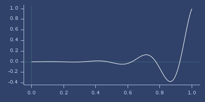Plot of elastic-in
elastic-in-out
(elastic-in-out t)(elastic-in-out amplitude period)ElasticInOut.
When called with t parameter, returns easing value (for amplitude=1.0 and period=0.3). When called with amplitude and period returns custom easing function.
Examples
Usage
(m/approx (elastic-in-out 0.2) 6)
;;=> 0.007813Create custom elastic easing
(m/approx ((elastic-in-out 1.0 0.1) 0.2) 6)
;;=> 0.007813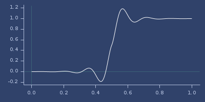Plot of elastic-in-out
elastic-out
(elastic-out t)(elastic-out amplitude period)ElasticOut.
When called with t parameter, returns easing value (for amplitude=1.0 and period=0.3). When called with amplitude and period returns custom easing function.
Examples
Usage
(m/approx (elastic-out 0.2) 6)
;;=> 1.125
;; Test: ok.Create custom elastic easing
(m/approx ((elastic-out 1.0 0.1) 0.2) 6)
;;=> 0.75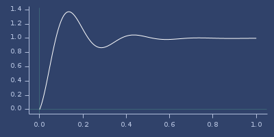Plot of elastic-out
exp-in
(exp-in t)ExpIn easing
Examples
Usage
(m/approx (exp-in 0.2) 6)
;;=> 0.003906
;; Test: ok.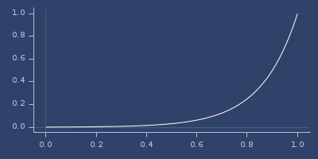Plot of exp-in
exp-in-out
(exp-in-out t)ExpInOut easing
Examples
Usage
(m/approx (exp-in-out 0.2) 6)
;;=> 0.007813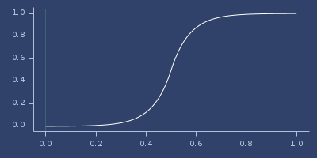Plot of exp-in-out
exp-out
(exp-out t)ExpOut easing
Examples
Usage
(m/approx (exp-out 0.2) 6)
;;=> 0.75
;; Test: ok.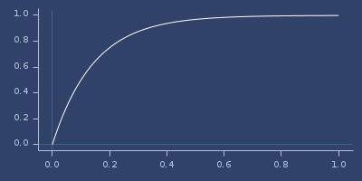Plot of exp-out
in-out
(in-out easeing)Create in-out easing for given easing function.
Examples
Usage
(let [inouteasing (in-out quad-in)]
(== (quad-in-out 0.75) (inouteasing 0.75)))
;;=> true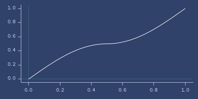Plot of in-out
out
(out easeing)Create out easing for given easing function.
Examples
Usage
(let [outeasing (out sin-in)] (== (sin-out 0.75) (outeasing 0.75)))
;;=> true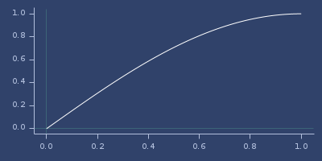Plot of out
poly-in
(poly-in t)(poly-in e t)PolyIn easing.
Optional exponent e defaults to 3.0.
Examples
Usage
(m/approx (poly-in 0.2) 6)
;;=> 0.008
;; Test: ok.Other exponent
(poly-in 8.0 0.5)
;;=> 0.003906250000000001Plot of poly-in

poly-in-out
(poly-in-out t)(poly-in-out e t)PolyInOut easing.
Optional exponent e defaults to 3.0.
Examples
Usage
(m/approx (poly-in-out 0.2) 6)
;;=> 0.032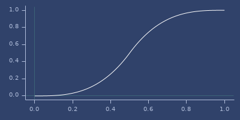Plot of poly-in-out
poly-out
(poly-out t)(poly-out e t)PolyOut easing.
Optional exponent e defaults to 3.0.
Examples
Usage
(m/approx (poly-out 0.2) 6)
;;=> 0.488
;; Test: ok.Other exponent
(poly-out 8.0 0.5)
;;=> 0.99609375Plot of poly-out

quad-in
(quad-in t)QuadIn easing
Examples
Usage
(m/approx (quad-in 0.2) 6)
;;=> 0.04
;; Test: ok.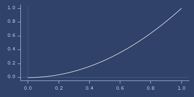Plot of quad-in
quad-in-out
(quad-in-out t)QuadInOut easing
Examples
Usage
(m/approx (quad-in-out 0.2) 6)
;;=> 0.08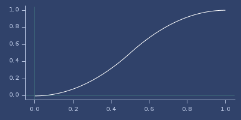Plot of quad-in-out
quad-out
(quad-out t)QuadOut easing
Examples
Usage
(m/approx (quad-out 0.2) 6)
;;=> 0.36
;; Test: ok.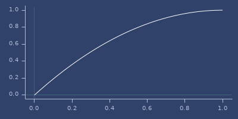Plot of quad-out
reflect
(reflect easing center)Create in-out easing for given easing function and center.
Examples
Usage
(let [neasing (reflect (partial back-in 2.0) 0.2)]
[(neasing 0.1) (neasing 0.5) (neasing 0.9)])
;;=> [-0.025 1.0390625 1.0203125]For
center=0.5function returns regular in-out easing
(== (back-in-out 0.4) ((reflect back-in 0.5) 0.4))
;;=> true
;; Test: ok.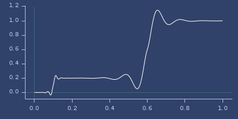Plot of reflect
sin-in
(sin-in t)SinIn easing
Examples
Usage
(m/approx (sin-in 0.2) 6)
;;=> 0.048943
;; Test: ok.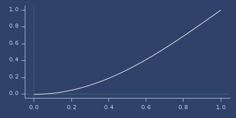Plot of sin-in
sin-in-out
(sin-in-out t)SinInOut easing
Examples
Usage
(m/approx (sin-in-out 0.2) 6)
;;=> 0.095492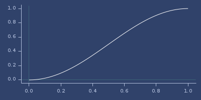Plot of sin-in-out
sin-out
(sin-out t)SinOut easing
Examples
Usage
(m/approx (sin-out 0.2) 6)
;;=> 0.309017
;; Test: ok.Plot of sin-out